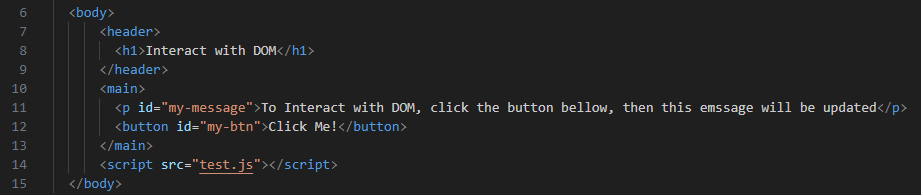
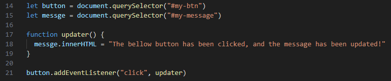
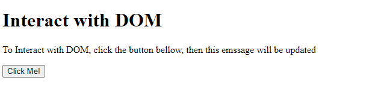
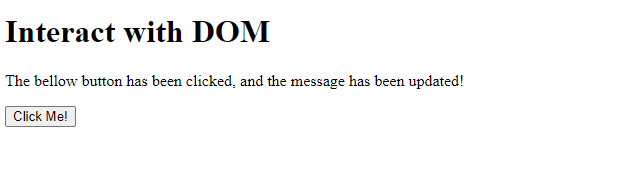
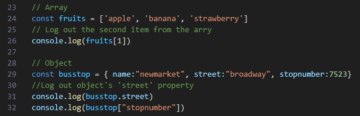
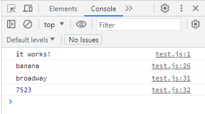

Javascript and DOM
14 September 2023
An analogy to describe JavaScript and its relationship to HTML and CSS.
If we liken a web page to an animation, then HTML plays the role of sketching the rough outline, responsible for outlining the basic structure of the animation. CSS, on the other hand, takes on the task of adding depth and detail. It not only fills in the colors, including the background color of the animation and the different colors of each character but also adjusts sizes, positions, line thickness, and a variety of other visual aspects. CSS is like the artist's palette, allowing you to fine-tune the animation's appearance, making it visually appealing and captivating. It's responsible for shaping and styling every element, like a director carefully choosing costumes and props for each character in the animation. The animation's ability to come to life, transforming from static to dynamic, is carried out by JavaScript. It's like turning a colorful painting into an animated video, transitioning from a static artwork to an animated clip.
Explain control flow and loops using an example process from everyday life.
Control flow in programming refers to the order in which statements are executed.
Loops in programming allow you to repeat a set of actions multiple times
For example, in our daily life, there is one scene. Mom needs to wash apples for her three children, two for each child. Mom needs to repeat the process of washing apples six times, each time as follows: pick up an unwashed apple, put it under running water, clean it, dry it, and put it on a plate.
Each step of washing apples and executing them in order is control flow; repeating it six times is loop
Describe what the DOM is and an example of how you might interact with it.
The Document Object Model (DOM) is a programming interface for web documents. It represents the page so that programs can change the document structure, style, and content. The DOM represents the document as nodes and objects; that way, programming languages can interact with the page.
A web page is a document that can be either displayed in the browser window or as the HTML source. In both cases, it is the same document but the Document Object Model (DOM) representation allows it to be manipulated. As an object-oriented representation of the web page, it can be modified with a scripting language such as JavaScript.
Here is a instance for how to use DOM and JavaScript to add event listener and update HTML element content:
HTML:
JavaScript:
Rendered(before click):
Rendered(after click):

Explain the difference between accessing data from arrays and objects.
Accessing data from array and object:
Console contents:

Explain what functions are and why they are helpful.
In JavaScript, functions are blocks of reusable code that perform a specific task or a set of tasks.
- Functions allow you to define a block of code once and reuse it multiple times throughout your program.
- Functions enable you to break down a complex problem into smaller, manageable parts.
- By breaking your code into functions, you can make changes or improvements to one part of your codebase without affecting other parts.
- Functions introduce scope in JavaScript. Variables declared inside a function are typically scoped to that function, which helps prevent naming conflicts and unintended variable modifications.